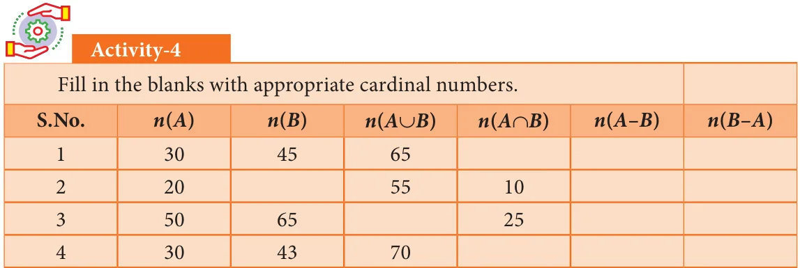
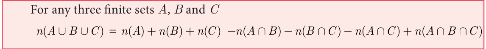

<!DOCTYPE html>
<html lang="en">
<head>
<meta charset="UTF-8">
<meta name="viewport" content="width=device-width,initial-scale=1">
<title>1.8 Application on Cardinality of Sets: — Set Language</title>
<meta name="description" content="Class 9 Mathematics · Set Language · 1.8 Application on Cardinality of Sets:">
<link rel="icon" href="data:image/svg+xml,<svg xmlns='http://www.w3.org/2000/svg' viewBox='0 0 100 100'><text y='.9em' font-size='90'>📘</text></svg>">
<link rel="stylesheet" href="../../../assets/book.css">
<link rel="stylesheet" href="https://cdn.jsdelivr.net/npm/katex@0.16.11/dist/katex.min.css" crossorigin="anonymous">
</head>
<body>
<header class="topbar">
<div class="topbar-in">
  <div class="crumb">
    <span class="c1"><a href="../../../index.html">Library</a> · <a href="../../index.html">Class 9 Mathematics</a></span>
    <span class="c2">Set Language · 1.8 Application on Cardinality of Sets:</span>
  </div>
  <a class="tb-btn" data-nav="prev" href="../../01-set-language/13-exercise-1.5/index.html" title="Exercise 1.5">←</a>
  <details class="drawer"><summary class="tb-btn" title="Sections in this chapter">☰</summary>
<div class="drawer-panel"><div class="dh">Set Language</div><a href="../01-chapter-opener/index.html">Chapter opener; 1.1 Introduction</a><a href="../02-set-1.2/index.html">1.2 Set</a><a href="../03-representation-of-a-set-1.3/index.html">1.3 Representation of a Set</a><a href="../04-exercise-1.1/index.html">Exercise 1.1</a><a href="../05-types-of-sets-1.4/index.html">1.4 Types of Sets</a><a href="../06-exercise-1.2/index.html">Exercise 1.2</a><a href="../07-set-operations-1.5/index.html">1.5 Set Operations</a><a href="../08-exercise-1.3/index.html">Exercise 1.3</a><a href="../09-properties-of-set-operations-1.6/index.html">1.6 Properties of Set Operations</a><a href="../10-exercise-1.4/index.html">Exercise 1.4</a><a href="../11-distributive-property-1.6.3/index.html">1.6.3 Distributive Property</a><a href="../12-de-morgan-s-laws-1.7/index.html">1.7 De Morgan’s Laws</a><a href="../13-exercise-1.5/index.html">Exercise 1.5</a><a href="../14-application-on-cardinality-of-sets-1.8/index.html" aria-current="page">1.8 Application on Cardinality of Sets:</a><a href="../15-exercise-1.6/index.html">Exercise 1.6</a><a href="../16-exercise-1.7/index.html">Exercise 1.7</a><a href="../17-summary/index.html">Points to Remember</a><a href="../18-ict-corner/index.html">ICT Corner 1</a></div></details>
  <a class="tb-btn" data-nav="next" href="../../01-set-language/15-exercise-1.6/index.html" title="Exercise 1.6">→</a>
  <button class="tb-btn" data-theme-toggle title="Toggle light / dark" aria-label="Toggle light or dark theme">◐</button>
</div>
<div class="progress"><span style="width:9.7%"></span></div>
</header>
<main class="wrap">
<div class="sec-head">
  <p class="eyebrow"><a href="../index.html">Chapter 1 · Set Language</a></p>
  <h1>1.8 Application on Cardinality of Sets:</h1>
  <p class="sec-meta">Textbook pages 29–34 · 18 figures</p>
</div>
<article class="prose">
<p>We have learnt about the union, intersection, complement and difference of sets. Now we will go through some practical problems on sets related to everyday life.</p>
<h3 id="s-results">Results :</h3>
<p>If A and B are two finite sets, then</p>
<ul class="qlist">
<li><span class="mk">(i)</span><span class="lt">n(A \(\cup\) B) \(= n(A)+n(B) -\) n(A \(\cap\) B)</span></li>
<li><span class="mk">(ii)</span><span class="lt">n(A - B) = n(A) - n(A \(\cap\) B)</span></li>
<li><span class="mk">(iii)</span><span class="lt">n(B - A) = n(B) - n(A \(\cap\) B)</span></li>
<li><span class="mk">(iv)</span><span class="lt">n(A ' ) = n(U) - n(A)</span></li>
</ul>
<p class="caption">Fig. 1.32</p>
<h4 class="callout-h" id="s-note">Note</h4>
<p>From the above results we may get,</p>
<p>� n(A \(\cap\) B) \(= n(A)+n(B) -\) n(A \(\cup\) B) � n(U) \(= n(A)+n(A\) ' ) z If A and B are disjoint sets then, n(A \(\cup\) B) \(= n(A)+n(B)\).</p>
<h4 class="callout-h" id="s-example-1-27">Example 1.27</h4>
<p>From the Venn diagram, verify that n(A \(\cup\) B) \(= n(A)+n(B) -\) n(A \(\cap\) B) Solution From the venn diagram,</p>
<figure class="fig side-fig"></figure>
<div class="mathblock"><p>\(A = {5\), 10, 15, \(20} B = {10\), 20, 30, 40, 50,}</p><p>Then \(A \cup B = {5\), 10, 15, 20, 30, 40, 50}</p><p>\(A \cap B = {10\), 20}</p><p>n(A) \(= 4\), n(B) \(= 5\), n(A \(\cup\) B) \(= 7\), n(A \(\cap\) B) \(= 2\) n(A \(\cup\) B) \(= 7\) " (1) Fig. 1.33</p><p>\(n(A)+n(B) -\) n(A \(\cap\) B) \(= 4+5 - 2\)</p><p>=7 " (2)</p></div>
<p>From (1) and (2), n(A \(\cup\) B) \(= n(A)+n(B) -\) n(A \(\cap\) B).</p>
<figure class="fig"></figure>
<p>If n(A) \(= 36\), n(B) \(= 10\), n(A \(\cup B)=40\), and n(A ' )=27 find n(U) and n(A \(\cap\) B).</p>
<div class="mathblock"><p>Solution n(A) \(= 36\), n(B) =10, n(A \(\cup B)=40\), n(A ' )=27</p></div>
<ul class="qlist">
<li><span class="mk">(i)</span><span class="lt">n(U) \(= n(A)+n(A\) ' ) \(= 36+27 = 63\)</span></li>
<li><span class="mk">(ii)</span><span class="lt">n(A \(\cap\) B) \(= n(A)+n(B) -\) n(A \(\cup\) B) \(= 36+10-40 = 46-40 = 6\)</span></li>
</ul>
<figure class="fig wide"></figure>
<figure class="fig"></figure>
<p>Let A={b, d, e, g, h} and \(B =\) {a, e, c, h}. Verify that n(A - B) = n(A) - n(A \(\cap\) B).</p>
<h4 class="callout-h" id="s-solution">Solution</h4>
<p>\(A =\) {b, d, e, g, h}, \(B =\) {a, e, c, h}</p>
<p>\(A - B =\) {b, d, g}</p>
<div class="mathblock"><p>n(A - B) \(= 3\) ... (1)</p></div>
<p>\(A \cap B =\) {e, h}</p>
<div class="mathblock"><p>n(A \(\cap\) B) \(= 2\) , n(A) \(= 5\)</p><p>n(A) - n(A \(\cap\) B) \(= 5-2\)</p><p>\(= 3\) ... (2)</p></div>
<p>Form (1) and (2) we get n(A - B) = n(A) - n(A \(\cap\) B).</p>
<figure class="fig"></figure>
<p>In a school, all students play either Hockey or Cricket or both. 300 play Hockey, 250 play Cricket and 110 play both games. Find</p>
<ul class="qlist">
<li><span class="mk">(i)</span><span class="lt">the number of students who play only Hockey.</span></li>
<li><span class="mk">(ii)</span><span class="lt">the number of students who play only Cricket.</span></li>
<li><span class="mk">(iii)</span><span class="lt">the total number of students in the School.</span></li>
</ul>
<h4 class="callout-h" id="s-solution">Solution:</h4>
<p>Let H be the set of all students who play Hockey and C be the set of all students who play Cricket.</p>
<figure class="fig side-fig"></figure>
<p>Then n(H) \(= 300\), n(C) \(= 250\) and n(H \(\cap\) C) \(= 110\)</p>
<p>Using Venn diagram,</p>
<p>From the Venn diagram,</p>
<ul class="qlist">
<li><span class="mk">(i)</span><span class="lt">The number of students who play only Hockey \(= 190\) Fig. 1.34</span></li>
<li><span class="mk">(ii)</span><span class="lt">The number of students who play only Cricket \(= 140\)</span></li>
<li><span class="mk">(iii)</span><span class="lt">The total number of students in the school \(= 190+110+140 =440\)</span></li>
</ul>
<p>Aliter</p>
<ul class="qlist">
<li><span class="mk">(i)</span><span class="lt">The number of students who play only Hockey</span></li>
</ul>
<p>n(H \(- C\) ) = n(H) - n(H \(\cap\) C)</p>
<div class="mathblock"><p>\(= 300 - 110 = 190\)</p></div>
<ul class="qlist">
<li><span class="mk">(ii)</span><span class="lt">The number of students who play only Cricket</span></li>
</ul>
<p>n(C \(- H\) ) = n(C) - n(H \(\cap\) C)</p>
<div class="mathblock"><p>\(= 250 - 110 = 140\)</p></div>
<ul class="qlist">
<li><span class="mk">(iii)</span><span class="lt">The total number of students in the school</span></li>
</ul>
<figure class="fig side-fig"></figure>
<p>n(HUC) = n(H) + n(C) - n(H \(\cap\) C)</p>
<div class="mathblock"><p>\(= 300+250 - 110 = 440\)</p></div>
<figure class="fig"></figure>
<p>In a party of 60 people, 35 had Vanilla ice cream, 30 had Chocolate ice</p>
<p>cream. All the people had at least one ice cream. Then how many of them had,</p>
<ul class="qlist">
<li><span class="mk">(i)</span><span class="lt">both Vanilla and Chocolate ice cream.</span></li>
<li><span class="mk">(ii)</span><span class="lt">only Vanilla ice cream.</span></li>
<li><span class="mk">(iii)</span><span class="lt">only Chocolate ice cream.</span></li>
</ul>
<h4 class="callout-h" id="s-solution">Solution :</h4>
<p>Let V be the set of people who had Vanilla ice cream and C be the set of people who</p>
<p>had Chocolate ice cream.</p>
<div class="mathblock"><p>Then n(V) \(= 35\), n(C) \(= 30\), n(V,C) \(= 60\),</p></div>
<p>Let x be the number of people who had both ice creams. From the Venn diagram</p>
<figure class="fig side-fig"></figure>
<div class="mathblock"><p>\(35 - x + x +30 - x = 60\)</p><p>\(65 - x = 60 x= 5\)</p></div>
<p>Hence 5 people had both ice creams.</p>
<ul class="qlist">
<li><span class="mk">(i)</span><span class="lt">Number of people who had only Vanilla ice Fig. 1.35</span></li>
</ul>
<div class="mathblock"><p>cream \(= 35 - x = 35 - 5 = 30\)</p></div>
<ul class="qlist">
<li><span class="mk">(ii)</span><span class="lt">Number of people who had only Chocolate ice cream \(= 30 - x\)</span></li>
</ul>
<div class="mathblock"><p>\(= 30 - 5 = 25\)</p></div>
<p>We have learnt to solve problems involving two sets using the formula n(A \(\cup\) B) = n(A) + n(B) - n(A \(\cap\) B). Suppose we have three sets, we can apply this formula to get a similar formula for three sets.</p>
<figure class="fig wide"></figure>
<h4 class="callout-h" id="s-note">Note</h4>
<p>Let us consider the following results which will be useful in solving problems using Venn diagram. Let three sets A, B and C represent the students. From the Venn diagram, Number of students in only set \(A = a\), only set \(B = b\), only set \(C = c\) . z Total number of students in only one set= (a +b +c) A B</p>
<p>z Total number of students in only two sets= (x \(+ y +\) z)</p>
<p>z Number of students exactly in three sets= \(r z ^{y} z\) Total number of students in atleast two sets (two or c more sets) \(= x + y +z + r _{C} z\) Total number of students in 3 sets \(= Fig.1.36\)</p>
<p>(a \(+b +c + x + y + z +\) r)</p>
<figure class="fig"></figure>
<p>In a college, 240 students play cricket, 180 students play football, 164 students play hockey, 42 play both cricket and football, 38 play both football and hockey, 40 play both cricket and hockey and 16 play all the three games. If each student participate in atleast one game, then find (i) the number of students in the college (ii) the number of students who play only one game. Solution Let C, F and H represent sets of students who play Cricket, Football and Hockey respectively.</p>
<div class="mathblock"><p>Then , n C( ) \(= 240\), n(F) \(= 180\), n(H) \(= 164\), n C( \(\cap\) F) \(= 42\), n(F \(\cap\) H) \(= 38\), n C( \(\cap\) H) \(= 40\), n C( \(\cap F \cap\) H) \(= 16\).</p></div>
<figure class="fig side-fig"></figure>
<p>Let us represent the given data in a Venn diagram.</p>
<ul class="qlist">
<li><span class="mk">(i)</span><span class="lt">The number of students in the college</span></li>
</ul>
<div class="mathblock"><p>\(= 174+26+116+22+102+24+16 = 480\)</p></div>
<ul class="qlist">
<li><span class="mk">(ii)</span><span class="lt">The number of students who play only one game</span></li>
</ul>
<p class="caption">Fig.1.37</p>
<div class="mathblock"><p>\(= 174+116+102 = 392\)</p></div>
<figure class="fig"></figure>
<p>In a residential area with 600 families \(\frac{3}{5}\) owned scooter, \(\frac{1}{3}\) owned car, \(\frac{1}{4}\) owned bicycle, 120 families owned scooter and car, 86 owned car and bicylce while 90 families owned scooter and bicylce. If \(\frac{2}{15}\) of families owned all the three types of vehicles, then find (i) the number of families owned atleast two types of vehicle. (ii) the number of families owned no vehicle. Solution Let S, C and B represent sets of families who owned Scooter, Car and Bicycle respectively.</p>
<figure class="fig side-fig"></figure>
<div class="mathblock"><p>Given, n(U) \(= 600\) n(S) \(= \frac{3}{5} \times 600 = 360 n\) C( ) \(= \frac{1}{3} \times 600 = 200\) n(B) \(= \frac{1}{4} \times 600 = 150\)</p><p>\(\frac{2}{15}\)</p><p>n(S \(\cap C \cap\) B) \(= \times 600 = 80\)</p></div>
<p>From Venn diagram,</p>
<ul class="qlist">
<li><span class="mk">(i)</span><span class="lt">The number of families owned atleast two</span></li>
</ul>
<p>types of vehicles \(= 40+6+10+80 = 136\) The number of families owned no vehicle \(= 600 -\) (owned atleast one vehicle)</p>
<p class="caption">Fig.1.38</p>
<figure class="fig"></figure>
<p>\(= -\) ( \(+ + + + + +\) ) \(= - =\)</p>
<p>In a group of 100 students, 85 students speak Tamil, 40 students speak English, 20 students speak French, 32 speak Tamil and English, 13 speak English and French and 10 speak Tamil and French. If each student knows atleast any one of these languages, then find the number of students who speak all these three languages. Solution Let A, B and C represent sets of students who speak Tamil, English and French respectively.</p>
<div class="mathblock"><p>Given, n(A È B ÈC) \(= 100\), n(A) \(= 85\), n(B) \(= 40\), n(C) \(= 20\), n(A \(\cap\) B) \(= 32\), n(B \(\cap\) C) \(= 13\), n(A \(\cap\) C) \(= 10\).</p></div>
<p>We know that,</p>
<p>n(A È B ÈC)= n(A) + n(B) + n(C) - n(A \(\cap\) B) - n(B \(\cap\) C) - n(A \(\cap\) C) + n(A \(\cap B \cap\) C)</p>
<div class="mathblock"><p>\(100 = 85 + 40 + 20 - 32 - 13 - 10 +\) n(A \(\cap B \cap\) C) Then, n(A \(\cap B \cap\) C) \(= 100 - 90 = 10\)</p></div>
<p>Therefore, 10 students speak all the three languages.</p>
<figure class="fig"></figure>
<p>A survey was conducted among 200 magazine subscribers of three different magazines A, B and C. It was found that 75 members do not subscribe magazine A, 100 members do not subscribe magazine B, 50 members do not subscribe magazine C and 125 subscribe atleast two of the three magazines. Find</p>
<ul class="qlist">
<li><span class="mk">(i)</span><span class="lt">Number of members who subscribe exactly two magazines.</span></li>
<li><span class="mk">(ii)</span><span class="lt">Number of members who subscribe only one magazine.</span></li>
</ul>
<h4 class="callout-h" id="s-solution">Solution</h4>
<figure class="fig side-fig"></figure>
<p>Total number of subscribers \(= 200\)</p>
<figure class="fig"></figure>
<p>From the Venn diagram, Fig.1.39 Number of members who subscribe only one magazine \(= + +\) Number of members who subscribe exactly two magazines \(= + +\) and 125 members subscribe atleast two magazines.</p>
<div class="mathblock"><p>That is, \(x + y + z + r = 125\) ... (1) Now, n(A \(\cup B \cup\) C) \(= 200\) , n(A) \(= 125\), n(B) \(= 100\), n(C) \(= 150\), n(AÇB) \(= x + r\)</p></div>
<p>n(BÇC) \(= y + r\), n(AÇC) \(= z + r\), n(AÇBÇC) \(= r\) We know that, n(AÈBÈC) \(= n(A)+ n(B)+\) n(C) - n(AÇB) - n(BÇC) - n(AÇC)+ n(AÇBÇC)</p>
<div class="mathblock"><p>\(200 = 125+100+150 - x - r - y - r - z - r+r\)</p><p>\(= 375 - (x+y+z+r) - r\)</p><p>\(= 375 - 125 - r\)  \(x + y + z + r\) =125</p><p>\(200 = 250 - r\) Þ \(r = 50\) From \((1) x + y + z + 50 = 125\) We get, \(x + y + z = 75\)</p></div>
<p>Therefore, number of members who subscribe exactly two magazines \(= 75\). From Venn diagram,</p>
<div class="mathblock"><p>(a \(+b +c) +(x + y + z +\) r) \(= 200\) ... (2)</p></div>
<p>substitute (1) in (2),</p>
<div class="mathblock"><p>\(a +b +c + 125 = 200\)</p><p>\(a +b +c = 75\)</p></div>
<p>Therefore, number of members who subscribe only one magazine \(= 75\).</p>
</article>
<nav class="pager"><a class="" data-nav="prev" href="../../01-set-language/13-exercise-1.5/index.html"><span class="dir">← Previous</span><span class="t">Exercise 1.5</span><span class="ch">Set Language</span></a><a class="nx" data-nav="next" href="../../01-set-language/15-exercise-1.6/index.html"><span class="dir">Next →</span><span class="t">Exercise 1.6</span><span class="ch">Set Language</span></a></nav>
</main><footer class="site">Generated from the source textbook PDFs · text, figures and exercises belong to their respective publishers.</footer><script defer src="https://cdn.jsdelivr.net/npm/katex@0.16.11/dist/katex.min.js" crossorigin="anonymous"></script>
<script defer src="https://cdn.jsdelivr.net/npm/katex@0.16.11/dist/contrib/auto-render.min.js" crossorigin="anonymous"
  onload="renderMathInElement(document.body,{delimiters:[
    {left:'\\(',right:'\\)',display:false},
    {left:'$$',right:'$$',display:true},
    {left:'\\[',right:'\\]',display:true}],throwOnError:false,ignoredTags:['script','noscript','style','textarea','pre','code']})"></script>
<script src="../../../assets/book.js"></script>
<script defer src="../../../../assets/search.js?v=1789782769"></script>
<script defer src="../../../../assets/screenshot.js?v=1789782769"></script>
</body>
</html>
